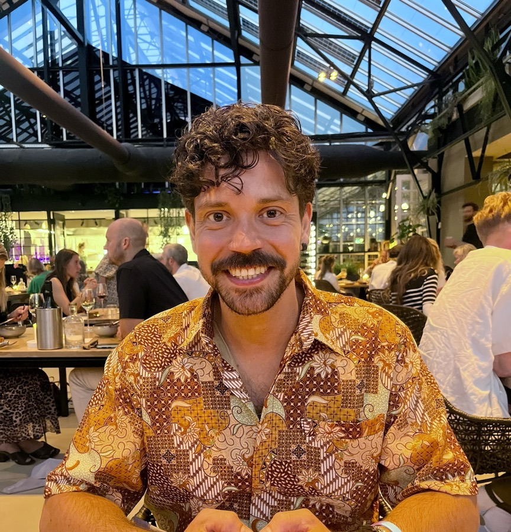

About
Restaurants first, research second, then both at once

Nothing makes me happier than an evening in a restaurant where the love for food and hospitality shows in every detail. I come by that honestly: my family ran a cafetería in San Sebastián and later another in Alicante, and my aunt has run her restaurant in Alicante for forty years; I worked seven full summers in it. I grew up in dining rooms and kitchens, and I saw up close how a place can be full of guests and still fail as a business.
Then I spent ten years as a research scientist, at the Universitat Autònoma de Barcelona, Pompeu Fabra University, and Radboud University in Nijmegen, working with all kinds of data and with the people who argue about it. Research taught me the habits I still work by: measure carefully, state uncertainty honestly, and never let a model make an unfair comparison.
deita has been my own practice since 2024, and it's where those two lives meet. I apply research methods to the questions this industry faces: what to charge, what to prep, when to staff, where the margin lives. I build and run deitalite, a weather-smart forecasting product for restaurants, and I publish research like the Amsterdam menus study.
I work with founders and operators in food and hospitality, as scoped projects or embedded in a team. And I'm always up for a good conversation about food, data, or both.